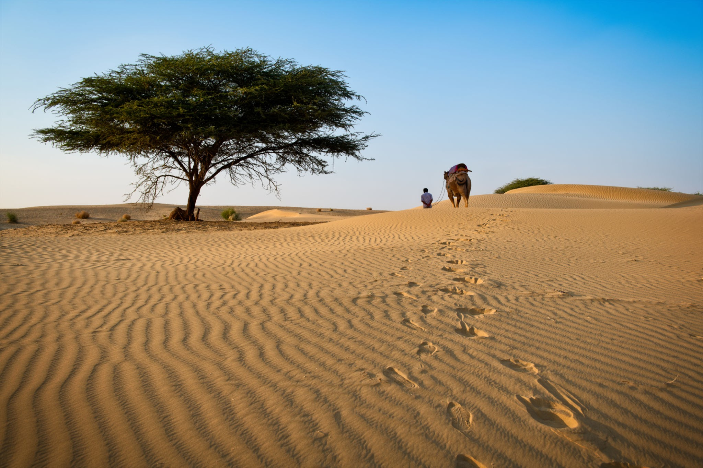
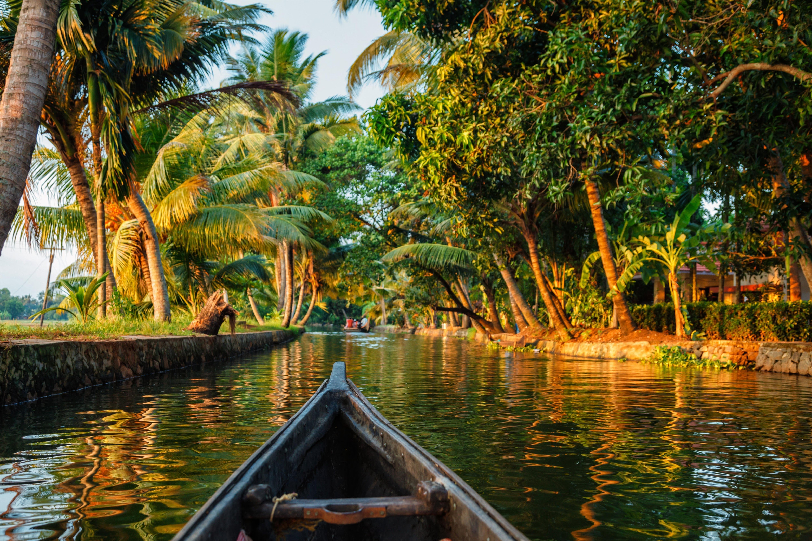
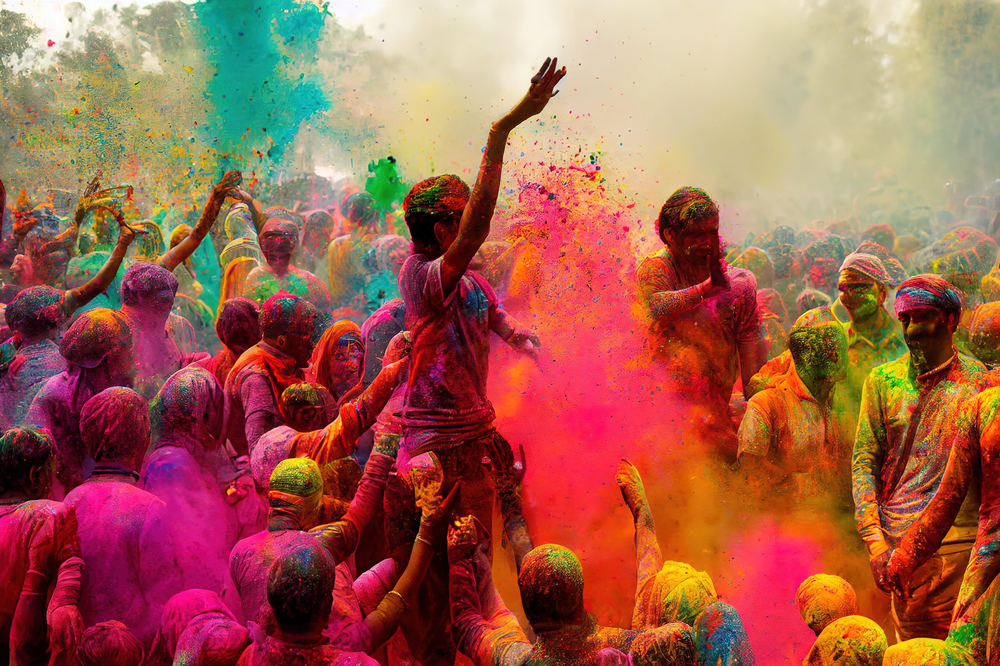

One country. A thousand journeys.
Discover the India
you haven’t met yet.
From Himalayan mornings to coastal sunsets, explore places, flavours and traditions that make every journey unforgettable.
28States
8Union territories
40+World Heritage Sites
Why India
Every road tells
a different story.
India is not one experience—it is countless worlds woven together. Ancient cities, wild landscapes, living craft traditions and food that changes every few hundred kilometres.
Find your journey
More than a destination


“
Travel far enough, and India becomes less a place you visit—and more a feeling you carry home.Start exploring →